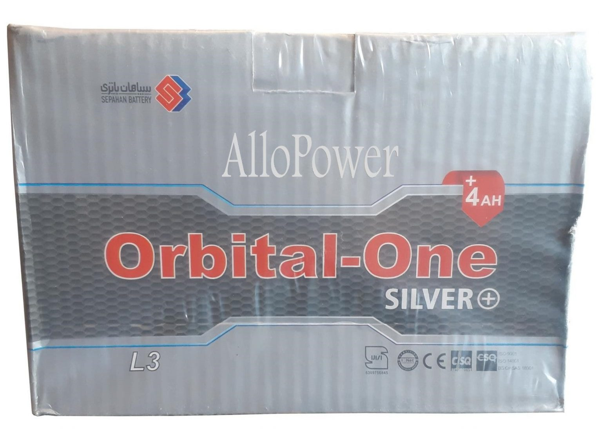

نمایندگی فروش باتری اوربیتال سیلور پلاس
باتری اوربیتال وان سیلور پلاس چیست؟
باتری اوربیتال وان سیلور پلاس جهت استفاده در خودرو های ایرانی و خارجی در ایران مورد استفاده قرار می گیرد. این باتری در آمپر های مختلف تولید می شود که هر کدام مخصوص برای خودرو خاصی است. برخی از باتری های این برند جهت تامین نیاز الکتریکی ماشین های سنگین، اتوبوس ها و مینی بوس ها نیز مورد استفاده قرار می گیرد.
باتری اوربیتال وان سیلور پلاس از نوع باتری های خشک و اتمی است. مجتمع صنعتی سپاهان باتری چندین سال در حال تولید باتری اوربیتال وان سیلور پلاس در اصفهان می باشد. دستگاه های تولیدی این شرکت تماماً از کشور های آلمان و اتریش وارد شده است و مطابق با استانداردهای روز اروپا و دنیا می باشند.
انواع باتری های اوربیتال از جهت کاربرد
از جهت کاربرد، باتری های اوربیتال وان سیلور پلاس را می توان به دو قسمت کلی تقسیم کرد:
- باتری خودرو های سبک (باتری های ۳۵ تا ۱۰۰ آمپر)
- باتری خودرو های سنگین (باتری های بیشتر از ۱۰۰ آمپر)
باتری های اوربیتال وان عمدتاً در ۳ گروه کلی تولید می شوند. باتری های سفید رنگ، نقره ای و قرمز رنگ، که باتری اوربیتال وان سیلور پلاس از نوع نقره ای می باشد. به همین دلیل آن را به عنوان باتری اوربیتال نقره ای نیز می شناسند.
باتری اتمی اوربیتال وان سیلور پلاس
یکی از سوالات مهم و ضروری در هنگام خرید هر باتری که ممکن است پیش بیاید، تفاوت بین باتری های اسیدی و اتمی است. اینکه کدام نوع باتری ها بهتر است؟
امروزه کارخانه های تولید باتری در دنیا دو نوع باتری تولید می کنند.
- باتری اسیدی
- باتری اتمی
هر دو نوع این باتری ها قابلیت شارژ شدن را دارند. همچنین می توان آن ها را در آمپر ها و ولتاژ های متفاوتی تولید کرد.
عمدتاً تفاوت باتری های اسیدی با اتمی در نوع و جنس صفحات داخلی آن ها است. باتری های اسیدی، از لحاظ قدمت قدیمی تر بوده و ارزان تر نیز هستند و نیاز به مراقبت همیشگی دارند.
عمده تفاوت باتری های اسیدی با باتری های اتمی در جنس آلیاژ آنها است. باتری های اتمی از لحاظ کیفیت و کارایی از طرفداران بیشتری برخوردار می باشد.
پرفروش ترین باتری های اوربیتال وان سیلور پلاس
باتری اوربیتال وان سیلور پلاس از نوع اتمی می باشد. و از همین جهت مزیت های زیادی نسبت به باتری های اسیدی موجود در بازار دارد. برخی از پرفروش ترین باتری های اوربیتال وان سیلور پلاس در بازار عبارت اند از:
- باتری ۵۰ آمپر اوربیتال وان سیلور پلاس سپاهان باتری
- باتری ۵۵ آمپر اوربیتال وان سیلور پلاس سپاهان باتری
- باتری ۶۰ آمپر اوربیتال وان سیلور پلاس سپاهان باتری
- باتری ۶۶ آمپر اوربیتال وان سیلور پلاس سپاهان باتری
- باتری ۷۰ آمپر اوربیتال وان سیلور پلاس سپاهان باتری
- باتری ۷۴ آمپر اوربیتال وان سیلور پلاس سپاهان باتری
- باتری ۸۸ آمپر اوربیتال وان سیلور پلاس سپاهان باتری
- باتری ۱۰۰ آمپر اوربیتال وان سیلور پلاس سپاهان باتری
- باتری ۱۵۰ آمپر اوربیتال وان سیلور پلاس سپاهان باتری
- باتری ۱۷۰ آمپر اوربیتال وان سیلور پلاس سپاهان باتری
- باتری ۱۸۰ آمپر اوربیتال وان سیلور پلاس سپاهان باتری
- باتری ۲۰۰ آمپر اوربیتال وان سیلور پلاس سپاهان باتری
کاربرد باتری اوربیتال وان سیلور پلاس برای خودرو های ایرانی و خارجی
باتری اوربیتال وان سیلور پلاس عموماً برای اکثر خودرو های ایرانی و خارجی موجود در بازار کاربرد دارد. در زیر توضیحاتی را ارائه دادیم تا با ویژگی ها و کاربرد های هر باتری بیشتر آشنا شوید:
باتری ۳۵ آمپر اوربیتال وان سیلور پلاس:
- وزن: ۱۰.۴ کیلوگرم
- ابعاد: ۲۲.۵*۱۳*۲۰ سانتی متر
- آمپر: ۳۵ آمپر
- ولتاژ: ۱۲ ولت
- نوع باتری: اتمی (خشک)
- قطب: قطب چپ موافق، قطب راست مخالف
- شرکت سازنده: سپاهان باتری
- مناسب برای خودرو های: تویوتا کرولا قدیمی، تویوتا یاریس قدیمی، دوو ماتیز، کیا پیکانتو، لکسوس سی تی ۲۰۰ اچ
باتری ۴۵ آمپر اوربیتال وان سیلور پلاس:
- ابعاد: ۱۹*۱۸*۲۵ سانتی متر
- آمپر: ۵۵ آمپر
- ولتاژ: ۱۲ ولت
- نوع باتری: اتمی (خشک)
- قطب: قطب چپ موافق
- شرکت سازنده: سپاهان باتری
- مناسب برای خودرو های: ام جی ۳، پراید، پروتون ویرا، پروتون جنتو، پژو ۲۰۶، پژو ۲۰۷، جک اس ۳، تیبا، دوو سیلو، رانا، ساینا، سانگ یانگ تیوولی، هیوندای آی ۱۰، هیوندای آی ۲۰، ورنا، اکسنت و …
باتری ۶۶ آمپر اوربیتال وان سیلور پلاس:
- وزن: ۱۷ کیلوگرم
- ابعاد: ۱۹*۱۸*۲۸ سانتی متر
- آمپر: ۶۶ آمپر
- ولتاژ: ۱۲ ولت
- نوع باتری: اتمی (خشک)
- قطب: قطب چپ موافق
- شرکت سازنده: سپاهان باتری
- مناسب برای خودرو های: آئودی تی تی، میتو، جولیتا، آلفا رومئو ۴ سی، ام جی ۶، ام وی ام ۳۱۵، بسترن بی ۳۰، پاژن، ویرا، پژو ۴۰۵، پژو پارس، تندر ۹۰، روآ، چری آریزو ۵، چری آریزو ۶، دنا، داستر، ساندرو، مگان، رونیز و …
باتری ۱۰۰ آمپر اوربیتال وان سیلور پلاس:
- وزن: ۲۲.۶ کیلوگرم
- ابعاد: ۱۹*۱۷.۵*۳۷.۷ سانتی متر
- آمپر: ۱۰۰ آمپر
- ولتاژ: ۱۲ ولت
- نوع باتری: اتمی (خشک)
- قطب: قطب چپ موافق
- شرکت سازنده: سپاهان باتری
- مناسب برای خودرو های: بی ام و ایکس ۳، بی ام و ایکس ۴، بی ام و ایکس ۵، بی ام و ایکس ۶، پورشه ۹۱۱، پورشه پانامرا، پورشه باکستر، پورشه کاین، پورشه ماکان، پورشه کیمن، رنو لتیتود، رنو لاگونا، سانگ یانگ چیرمن، کیا سورنتو ۲۰۱۶، مازراتی کواتروپورتو، مازراتی کواتراپورته، مازراتی گرن توریسمو، مازراتی گیبلی، مرسدس بنز سی ال اس، مرسدس بزن جی ال کی، مرسدس بنز اس ال، مرسدس بنز اس ال کی، هیوندای جنسیس سدان، هیوندای سنتینیال، ولوو ایکس سی ۹۰ و …
خرید باتری اوربیتال وان سیلور پلاس از نمایندگی
در بالا به طور مفصل درباره باتری های اوربیتال وان سیلور پلاس و کاربرد های آن برای خودرو های ایرانی و خارجی گفته شد.
باتری های ۳۵ تا ۱۰۰ آمپر برای خودرو های با مصرف سوخت سبک و قدرت نسبتا پایین یا معمولی تولید شده اند.
ما باتری های ۱۰۰ آمپر مخصوص خودرو های خارجی با قدرت و ظرفیت بالا تولید می شوند. خودرو هایی نظیر پورشه، بی ام و، بنز و آئودی و دیگر خودرو های پرسرعت موجود در بازار از این دسته هستند.
عموما باتری هایی که بالای ۱۰۰ آمپر هستند برای خودروهای سنگین از قبیل انواع اتوبوس، کامیون های باربری و یخچالدار، تریلی ها و مینی بوس ها کاربرد دارند.
اطلاعات تخصصی برای باتری ها ملزم به داشتن علم و دانش به خصوصی می باشد، به همین دلیل بهتر است جهت خرید و فروش انواع باتری حتما با متخصصین و مشاورین در زمینه باتری ارتباط بگیرید.